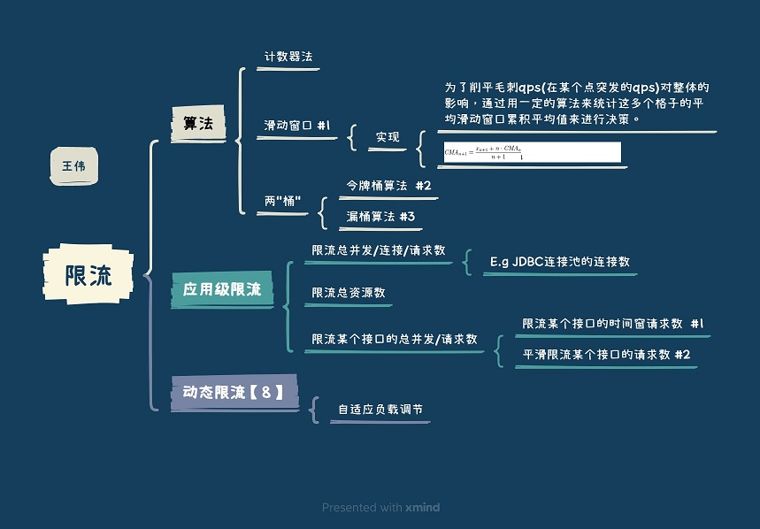

限流总结 #

限流算法 #
| 流控算法 | 原理 | 实现 | 实现复杂度 | 优势 | 缺点 |
|---|---|---|---|---|---|
| 计数器法 | 简单 | 缺点 临界问题,不能应对突发请求 | |||
| 滑动窗口 | 滑动时间窗口划成了多格，粒度细; 解决了计数器法的缺点; |
基于时间窗口[5] | 简单 | ||
| 令牌桶算法 | Guava RateLimiter [7] | 复杂 | 能够处理突发请求; 允许某些流量的突发，被业界采用地较多 | ||
| 漏桶算法 | 漏桶算法[6] 代码[0] | 简单 | |||
| 队列算法 | FIFO队列; 权重队列; Linux tc | 队列长度很关键 |
分布式限流 #
-
分布式计数器
- 实现 Redis(服务端)+Lua(客户端)
-
限流网关
- 缺陷 服务之间的调用不一定走网关
参考 #
- 漏桶算法实现
- 限流系统如何发现系统的热点 中间件小哥 ***
- 接口限流算法总结 夜有所思，日有所梦
- 聊聊高并发系统之限流特技 张开涛
- 服务化体系之－限流 江南白衣 失效
- 《应用 6：断尾求生 —— 简单限流 》 Redis 深度历险：核心原理与应用实践
- 《应用 7：一毛不拔 —— 漏斗限流》 Redis 深度历险：核心原理与应用实践 有代码实现
- Guava RateLimiter源码解析 林舍 manerfan
- 淘宝应用柔性架构的探索 自适应负载调节